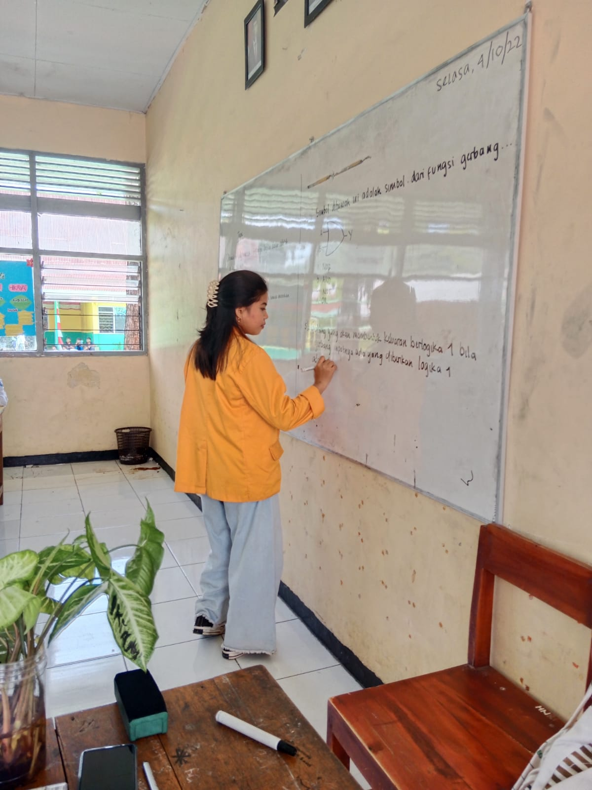

Hy kenalin saya fidela biasa di panggil dela saya menyukai lagu-lagu yang bergendre rock & pop jadul. saya jyga menyukai pantai dimana saya merasa sangat senang jika mendengar desiran air dan ombak yang bertabrakan. saya juga sangat menyukai langit.
Saya lahir di Parepare pada tanggal 10 februari 2002. saya berasal dari Toraja dan beragama Katolik
Silahkan klik link disini untuk mengakses Artikel.
| Hari | Waktu | Mata Kuliah | Ruangan | Dosen | |
|---|---|---|---|---|---|
| Pengampuh | Mitra | ||||
| Senin | 10.05 - 12.40 | Jaringan Komputer | Lab Jaringan | Dr. Eng. Ir. Jumadi M Parenreng, M.Kom., IPM. | Aulyah Zakilah Ifani, M.Kom. |
| Selasa | 07.30 - 10.05 | Kecerdasan Buatan | Teknol 1F | Dr. Iwan Suhardi, ST., MT. | Dyah Darma Andayani, ST.,M.Tel.Eng. |
| 13.10 - 14.50 | Profesi Kependidikan | Teknol 1D | Prof. Dr. Ir. Riana Tangkin Mangesa, MT. | Dwi Rezky Anandari Sulaiman, S.Psi., M.Si. | |
| Rabu | 07.30 - 10.05 | Struktur Data | Lab Sistem Cerdas | Dyah Vitaloca, ST., M.Pd. | Muh. Akbar, S.Pd., M.Pd. |
| 14.50 - 17-50 | Keamanan Komputer | Lab Programming | Dr. Eng. Ir. Abdul Wahid, ST., M.Kom., IPM. | Aulyah Zakilah Ifani, M.Kom. | |
| Kamis | 10.05 - 12.40 | Strategi Pembelajaran | Lab Animasi | Dr. M. Rais, S.Pd., M.P., M.T. | Dr. Ir. Yasdin, S.Pd., M.Pd., M.Sc., IPM. |
| 13.10 - 15.40 | Pemrograman Web | Lab Pemrogramming | Alifya Nfh, S.Pd., M.Pd. | Muhammad Fadhil Supriadi, S.Pd., M.Pd. | |
| Jumat | 13.10 - 14.50 | Inovasi Teknologi | Teknol 1C | Dr. Ir. Yasdin, S. Pd., M.Pd., M.Sc., IPM. | M. Miftach Fakhri, S.Kom., M.Pd |
Silahkan klik link disini untuk mengakses Buku Tamu.